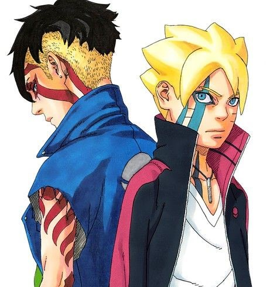

Latest Manga Chapter


Theories And Articles

Demon Slayer: Swordsmith Village Arc's 1st Episode Theatrical Screenings Earn 2 Billion Yen World Tour Jōei:Kimetsu no Yaiba Jōgen Shūketsu,Soshite Katanakaji no Sato e"(World Tour Screenings:Demon Slayer:The Upper Ranks Gather and Onward to the Swordsmith Village),the theatrical screenings of the upcoming Demon Slayer:Kimetsu no Yaiba Swordsmith Village the theatrical screenings of the upcoming Demon Slayer:Kimetsu no Yaiba Swordsmith Village Arc television anime, earned over 2 billion yen in its first 10 days at the Japanese box office. The film has sold about 1.47 million tickets....Read More
Powerful Weirdos: Seeing my Neurodivergence in Shonen Protagonistsby Sean AitchisonThere's more than meets the eye to Goku—in fact, there's more than meets the eye to Naruto, Luffy, Asta, and most shonen battle protagonists. Though they seem like just simple-minded, rude, and hyperactive hotheads, there's a lot of complex layers to them. On top of their potential for deep, powerful storytelling in their undying determination, fighting-against-the-world narratives, they also serve as a fantastic source of neurodivergent representation.....Read More


Attack on Titan OADs' English Dubs Premiere on May 8posted on 2022-05-02 22:40 IST by Alex MateoAll 8 episodes get dubs premiering weeklyCrunchyroll announced on Monday that it will stream English dubs for all eight Attack on Titan original anime DVD (OAD) episodes, starting on May 8. Dubbed episodes will premiere weekly.Crunchyroll and Funimation began streaming the OADs in Japanese with English subtitles on December 19.The first OAD episode is the "Isle's Notebook" OAD. Episodes 2-3 consist of "The Sudden Visitor" and "Distress" stories.....Read More
1st Attack on Titan Crossover Now Live in LifeAfter Survival Game Event featuring Armored Titan, over 90 crossover items will run until September 29NetEase Games' LifeAfter survival game launched its first crossover event with Attack on Titan last Thursday. The event, which includes a brand new stage featuring the Armored Titan and over 90 crossover items, will run until September 29.In the new "Armored Titan Attacks Camp" stage, players team up in groups of four to fend off the Titans and defend the supply box Much like the original story of Attack on Titan, LifeAfter's crossover event puts the man-eating Titans.....Read More


It may not seem practical for an anime character to announce their attacks before performing them. After all, it's basically like advertising their next move to their opponent. If their foe has previously seen the attack, it's not much of a surprise. Nonetheless, calling out one's attacks is one of the most common tropes in anime, especially battle shonen series like Dragon Ball Z and My Hero Academia. It almost seems like announcing the attack names makes the attacks themselves more powerful or effective.....Read More
Chainsaw Man's Power may have set her sights on becoming the Prime Minister, but she clearly has a talent for dancing. Dressed in the Public Safety Devil Hunter's uniform with the tie loosened, the cosplayer added unique flair to both their cosplay portrayal and the routine. For the former, they hooked a silver chain to a pair of loose-fitting black paints. After beginning with some viral TikTok dances.....Read More


Ochaco Uraraka, also known as Uravity from My Hero Academia, comes to life in a ravishing cosplay by Aurisuna.The Polish cosplay group Kalisiacos helped Aurisuna become the gravity-manipulating superheroine from Class 1-A. The cosplayer's rendition of Ochaco is breathtaking and realistic enough to make fans feel as if the pro-hero-in-training just stepped into reality.....Read More
The ending of Pokémon Journeys Episode 136 featured a montage of many classic characters, including the return of Ash's beloved Butterfree. This was Butterfree's first physical appearance in the Pokémon anime since its iconic, tearjerking exit in Pokémon Indigo League's episode "Bye-Bye Butterfree," the perfect capstone to an already-emotional episode.With the announcement that his time as the Pokémon anime's main protagonist is coming.....Read More


The world of shonen anime has a handful of well-established storytelling tropes and recurring themes, from the virtue of never giving up to the power of friendship and being rewarded for hard work. Usually, the young protagonists embody these noble traits, while their adult mentors and teachers may directly or indirectly guide them in that direction.One example is the concept of a competitive examination, where each competitor is told to look out for themselves to score points and win. On the face of it, shonen students are being pitted against one another, but as many recent shonen titles have shown, the competition is just an illusion.....Read More
When the original Pokémon Red and Blue came out, players had two main objectives for completing the game. The first objective was to catch, train, and battle with Pokémon to become Champion. The second objective was to capture all available Pokémon and complete the Pokédex. While the first goal was thoroughly covered by Ash in the anime, the second goal was left largely unattended.For whatever reason, neither Ash nor his travel companions were focused on capturing Pokémon until Goh was introduced. Yet his first appearance was two decades into the anime's run, approaching the end of Ash's adventures.....Read More


Whenever someone asks a Pokémon fan why Ash never evolved his Pikachu, a couple of answers come up. At the end of the day, the Pokémon anime is an advertisement for the games. This not only means showing off characters and story elements from the games, but also certain mechanics for how the games are meant to be played.It teaches players these kinds of lessons while also entertaining them with compelling stories.....Read More
Attack on Titan has unveiled a limited-edition ukiyo-e print with a hefty price tag.The piece is highly limited, as there are only 300 set for production. Starting Feb. 25, fans can purchase the print on the Akihabara Premium Collection website for a whopping 66,000 yen (equivalent to about $498 at the time of writing.) A special promotional video showcases a behind-the-scenes.....Read More


One of Zoro's best moments in One Piece was absorbing Luffy's pain on Thriller Bark. Taking in this pain and enduring it showed his strength in body and mind among other things. Now, Jewelry Bonney is about to go through a similar trial. By the end of it, she should come out revealing her resolve and becoming more fleshed out as a character.Zoro's trial came at the end of the Thriller Bark Arc. The Straw Hats, despite an exhaustive battle with Gecko Moria.....Read More
Thoughts from the mangaka about their manga, lives, and other random things. I’ve been curious about Sfida Setagaya, so this season I plan to focus on them as I watch the games.My bridge came off as I was chewing gum. My tongue escapes into the gap, so it’s hard to talk right now.I’m just so relieved I’ve gotten to draw this much. My worst-case plan was hurrying through about five volumes, so I’m grateful.....Read More


Knowing that All For One has put a target on his back, Midoriya has left U.A., hoping to draw the villains away from everyone he cares about. But his friends know the newest bearer of One For All shouldn’t handle this burden alone, so they set out to bring him back. The forces of good need every hero they can find as the unfolding crisis in Japan now has global ramifications, with even foreign heroes itching to join the fight.....Read More
Now with the mysterious Eida at his side, Code continues his march for revenge against Boruto and Konoha village. Even with Naruto and Sasuke on alert, stopping Code and his warping ability may be impossible. However, Kawaki seems to have some secret plans of his own.....Read More


The epic battles for supremacy in the black market lead to a revolution for carnivores and herbivores alike. Mixed-species psychopath Melon finds a new target for his rage. And in the bittersweet conclusion, Beastar horse Yahya and Komodo dragon Gosha attempt to repair their friendship, red deer Louis and gray wolf Juno seek a way forward, and gray wolf Legoshi and dwarf rabbit Haru define their relationship on their own terms.....Read More
As pirates, One Piece's Straw Hats are no strangers to bounties. Once the Raid on Onigashima was over, however, Luffy was the only one whose new bounty was revealed.One Piece Chapter 1058, "New Emperors," finally revealed the rest of the Straw Hat Pirates' bounties following the Wano Arc. Some of the increases were about what was expected, while others were either surprisingly high or low. Here's a look at each of the Straw Hats' new bounties coming out of Wano and the apparent reasoning behind them.....Read More